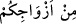

“– Hayvanların dilini öğrenmek istiyorsan bunu sana öğretebilirim fakat bu dili
bildiğini birine haber verdiğin anda ölürsün” der. Adam:
“– Hiç kimseye haber vermeyeceğim” deyince Hz. Süleyman o halde ben de sana
öğreteyim deyip öğretir.
Bu adamın gündüzleri çalıştırarak geçimini sağlamış olduğu bir öküzü bir de eşeği
vardır. Akşam olunca hayvanlarına yiyecek götürür ve otları hayvanların önüne koyar.
Merkep öküze der ki:
“Bu gece akşam yemeğini bana ver, sâhibimiz seni hasta zannetsin; yarın seni işe
çıkartmasın. Sonra gelecek akşam, akşam yemeğimi ben sana veririm” der. Bunun
üzerine öküz başını ottan kaldırır ve yemez bunu duyan adam gülümser. Karısı neden
güldüğünü sorunca “hiç” diye cevap verir.
Ertesi akşam olunca adam merkebe ve öküze yiyeceklerini verdiği zaman öküz;
“borcunu ver bakalım, çünkü ben açlıktan ve bitkinlikten mahvoldum” der.
Merkep; “Sen ne olduğunu ve durumun nasıl olduğunu bilmiyorsun” der. Bunun
üzerine öküz “ne oldu ki?” diye sorunca eşşek; “bu sabah sâhibimiz kasaba gitti ve
benim öküzüm hasta, hastalıktan çelimsizleşmeden önce onu kes dedi. Dolayısıyla sen
bu gece sabret yiyeceğini bana ödünç ver ki kasap yarın sabah geldiğinde seni
zayıflamış bulsun, kesmesin ve böylece sen de ölümden kurtulmuş olasın. Şimdi sen
akşam yemeğini yer ve karnını şişirecek olursan korkarım ki kasap seni etli ve şişman
bulur ve keser. Ben iki gecelik vermiş olduğun borcu sana iâde ederim.”
Bu sözleri duyan öküz kafasını ottan kaldırır ve hiç bir şey yemez. Hayvanların sâhibi
duyduğu bu konuşmadan dolayı güler, karısı kocasına; “neden güldün bana haber ver,
eğer vermiyeceksen beni boşa” deyince, adam “neden güldüğümü sana haber verirsem o
anda ölürüm” der. Karısı “beni ilgilendirmez” deyince kocası “o zaman kağıt ve
mürekkep getirki vasiyetimi yazayım, sonra haber vereyim, ardından da öleyim” der.
Bunun üzerine karısı gerekli kağıdı ve mürekkebi verir. Kocası vasiyetini yazarken
kadın bir parça ekmeği köpeğin önüne atar, ancak horoz daha erken davranıp o ekmek
parçasını gagasıyla alıp kaçar. Köpek horoza “sen bana zulmettin” der. Horoz;
“sâhibimiz ölmek istiyor sen nasıl olsa cenaze yemeğinden adam akıllı doyacaksın fakat
biz üç gün kümesimizde hapis kalacağız, kapımızı kimse açmayacak. Sâhibimiz eğer
karısını hoşnut etmek için ölürse Allah onu uzaklaştırsın ve ona gazab etsin. Benim
dokuz karım var hiç biri içimde gizlediğim sırrı bana soramaz. Ben onun yerinde
olsaydım, onu ölünceye ya da tevbe edinceye kadar döverdim, ondan sonra kocasının
sırrını soramazdı.” der. Bu ifâde üzerine adam eline bir sopa alır ve karısını bu
yaptıklarına tevbe edinceye kadar döver.
Câhil ve doğru olmayan bir kadın,
Senin başına belâdır, istediğin kadın değil.
“Eşlerinizden” anlamına gelen “/min ezvâciküm” ifâdesindeki min harf-i